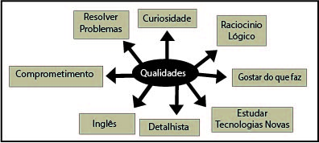

"Durante todos esses anos programando e estudando, eu acabei descobrindo algumas qualidades e alguns esforços que fazem a diferença entre um bom programador e um programador mediano. Mostrarei aqui essas qualidades e esforços que julgo mais importantes."
Faz 12 anos que programo computadores. Com o passar do tempo, adquirindo experência, descobri que sempre têm algo para aprender e se dedicar para fazer acontecer. A dedicação é uma das virtudes para ser bom programador.
Comecei a manusear o computador no inicio de minha Adolescência. Com 18 anos de idade, ingressei em uma faculdade mas estava fazendo um curso que não me enquadrava, pois achava que ser programador não era profissão, pra mim era hobby,comecei o curso era Relações Internacionais. Embora, tinha algumas disciplinas, como economia, Ciencias Politicas e Ciências Sociais que achava interessante, não era o que queria para o futuro.
Seja você profissional de Analista de Sistema, programador, Engenheiro de Sistema, Arquiteto e Sistema ou ainda uma pessoa que usa a programação como hobby é necessário que o profissional em questão possua algumas virtudes ou qualidades que descreverei a seguir.
Aos 15 anos de idade, conversando com um familiar próximo sobre o que é um Hacker? - E ele me disse, que Hacker é uma pessoa que sabe o que realmente acontece quando aperta um botâo do teclado. Mas me aprofundando no assunto descobri que hacker é uma pessoa que gosta de explorar os detalhes de sistemas programáveis e testar suas potencialidades, ao contrário da maioria dos usuários, que preferem aprender somente o mínimo necessário. Em outras palavras, um bom profissional de programação têm por virtude a curiosidade do saber, que é a mesma virtude do hacker.
Exemplos:
Um usuário sabe que quando ele pressiona a tecla "A", aparece a letra "A" na tela. Um profisional de programação diz que ao apertar a tecla "A",o teclado vai disparar um sinal elétrico que quando chegar no computador, vai disparar uma interrupção de processador, que será tratada por um driver que colocará isso em uma fila, que será lida pelos programas.
Um programador comum sabe que quando você chama a função MessageBox aparece uma janela com uma mensagem na tela. Um bom programador sabe que isso faz uma chamada para GDI, que depois vai para kernel mode, que chama o driver de vídeo que chama o monitor.
Conhecer bem um computador e seu funcionamento. Abstração, capacidade para resolução de problemas e raciocínio lógico. Ir alêm é um diferencial.
Portanto, um bom programador deve ter curiosidade do saber, ser detalhista, racionio lógico, capaz de resolver problemas são virtudes de um profissional de programação.
É lógica que podemos citar muitas outras virtudes que fazem o profissional diferenciar dos demais, mas aquirindo essas qualidades já são suficiente para que obtenha sucesso no que está fazendo.
| Inglês: |
Saber inglês em programação é importante porque a maioria dos comandos que você programa são em inglês, as documentações ou tutoriais também são em inglês. Quando você se candidata para uma vaga de trabalho, o entrevistador pergunta se você fala Inglês. |
| Estudar Tecnologia nova: |
Sabemos que algumas empresas estão investindo no mercado de Tecnologia para divulgação de seu produto, para gerenciamento do produto e departamentos da empresa. Portanto, o profissional deve estar preparado para mudanças. As vezes, você se depara com um software que você não sabe ou não sente confortável para trabalhar nele. Invista em você mesmo, use livros em Inglês e Português e compare, saber procurar um assunto para solução dos problemas, mais rápido vai terminar o que está fazendo...Isso pode ser decisivo em sua contratação. |
| Resolver Problemas: |
Resolver problemas é essencial para que o programador obtenha sucesso, em alguns casos conta como avaliação como você resolve o problema, precisa ser coerente e de forma correta. |
| Responsabilidade: |
Mostrar que você está apto para o cargo, terminar o que está fazendo no tempo estabelecido, isso fortalece sua imagem. Dar soluções aos demais e espirito de equipe. Você estará comprometido com a emresa. |
Um bom programador pode aparecer em qualquer área ou linguagem. Não importa se você programa em VB, C#, C++, Objective C, Perl ou Ruby. Se a sua linguagem for limitada, você automaticamente procurará outra quando for a hora, cada linguagem e ferramenta tem seu própósito. O que importa é ir mais além. Não é necessário entender sobre o kernel do sistema operacional nem sobre hardware, mas quanto mais você souber sobre isso, melhor programador você é.
Assim é um bom programador. Mesmo que você não tenha experiência, se você tem essa curiosidade e essa "ânsia" por saber tudo e aprender tudo, vá em frente, você está no caminho certo.
Capacidade técnica é algo que se adquire com o tempo, mas essa vontade de aprender é algo para poucos. Tudo que alguém com esse perfil precisa aprender está nos livros e na experiência do dia-a-dia. Se você não trabalha com programação, compre uns livros, leia-os, passe algumas madrugadas na frente do computador e depois procure um emprego para entrar na área. E depois eu espero que você tenha o mesmo prazer que eu tenho ao levantar segunda-feira para mais um dia de trabalho.